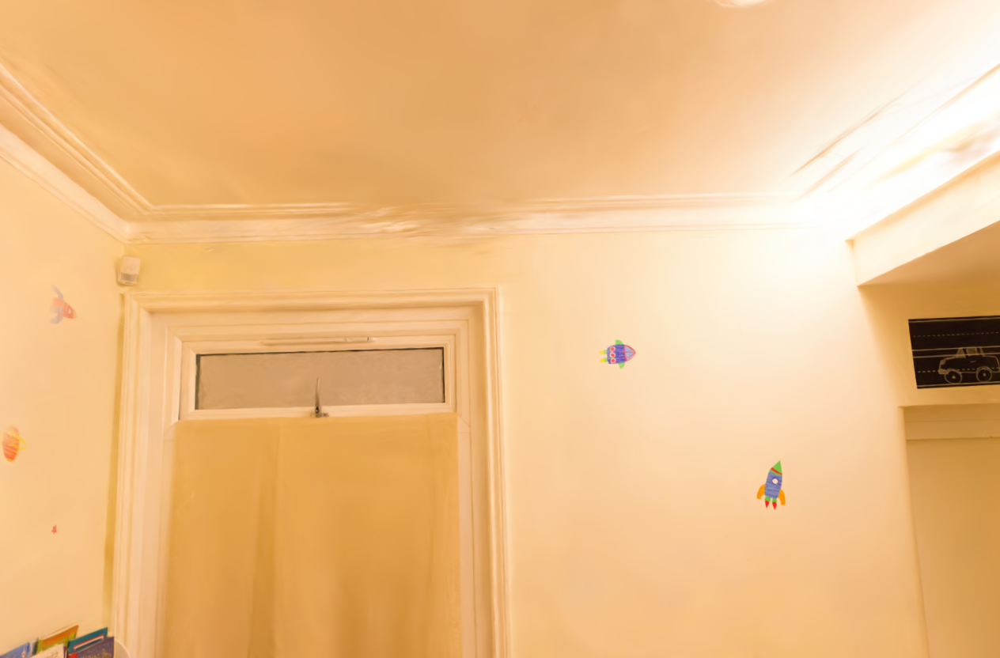
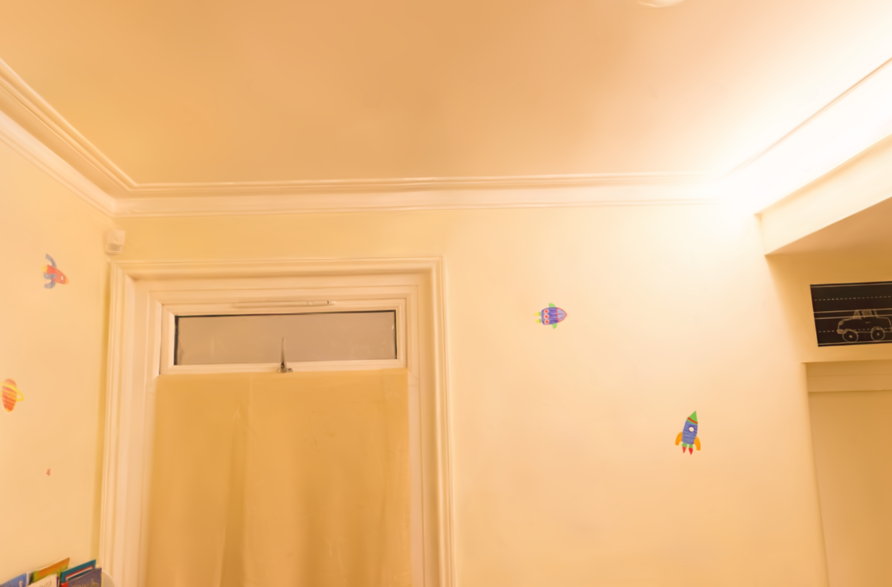
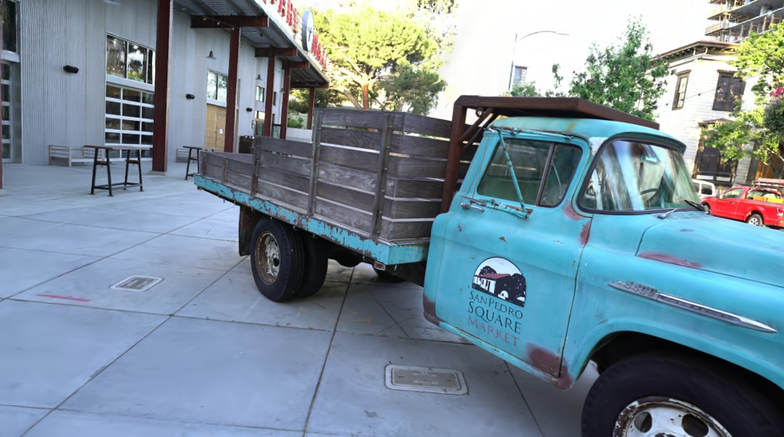
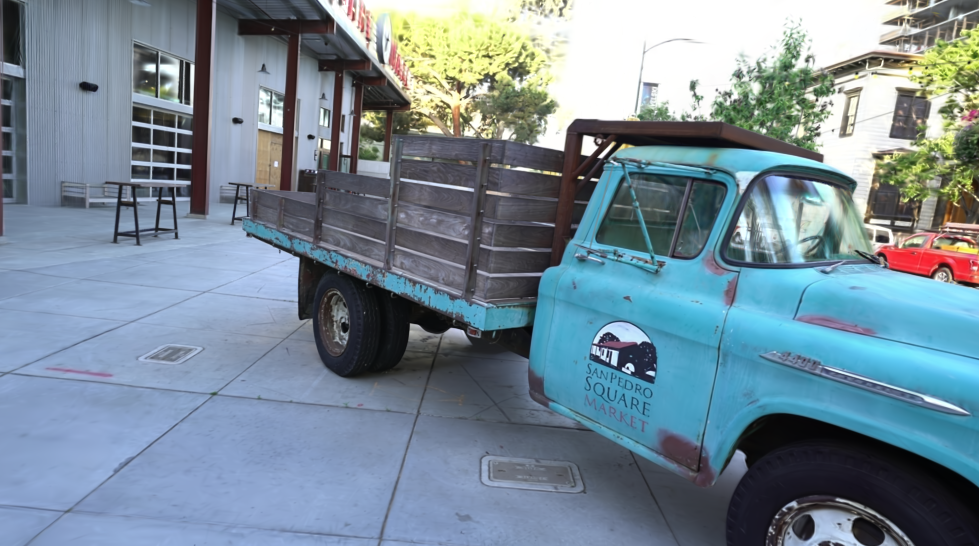
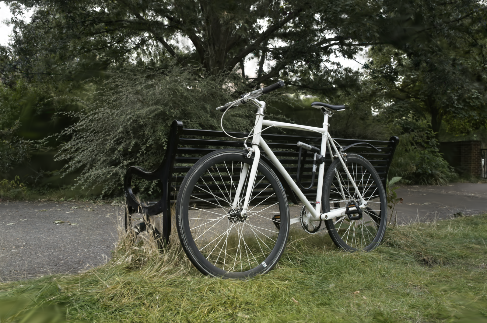
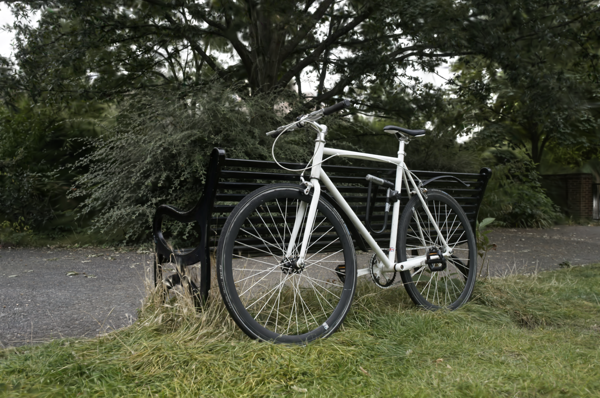
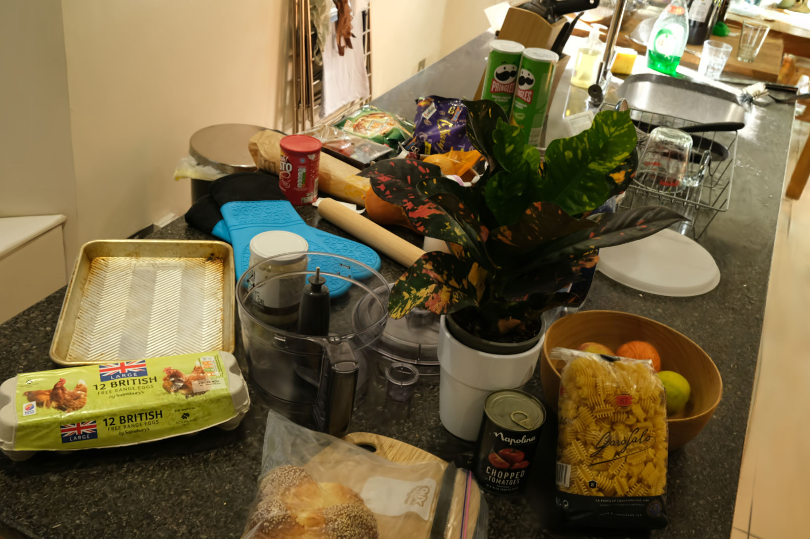
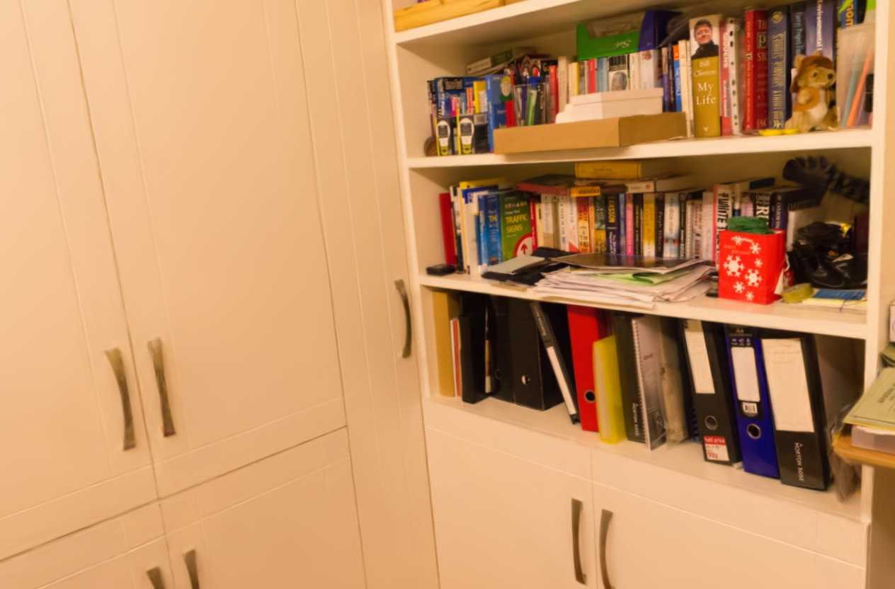

Comparison to 3DGS
Our GaussianSpa still achieves 0.5dB PSNR improvement even after reducing the Gaussian points by 6×.

3DGS (2.29M)
Ours (0.22M)
3DGS (2.54M)
Ours (0.34M)
3DGS (5.31M)
Ours (0.66M)
3DGS (1.17M) Ours (0.39M)
3DGS (2.29M) Ours (0.22M)